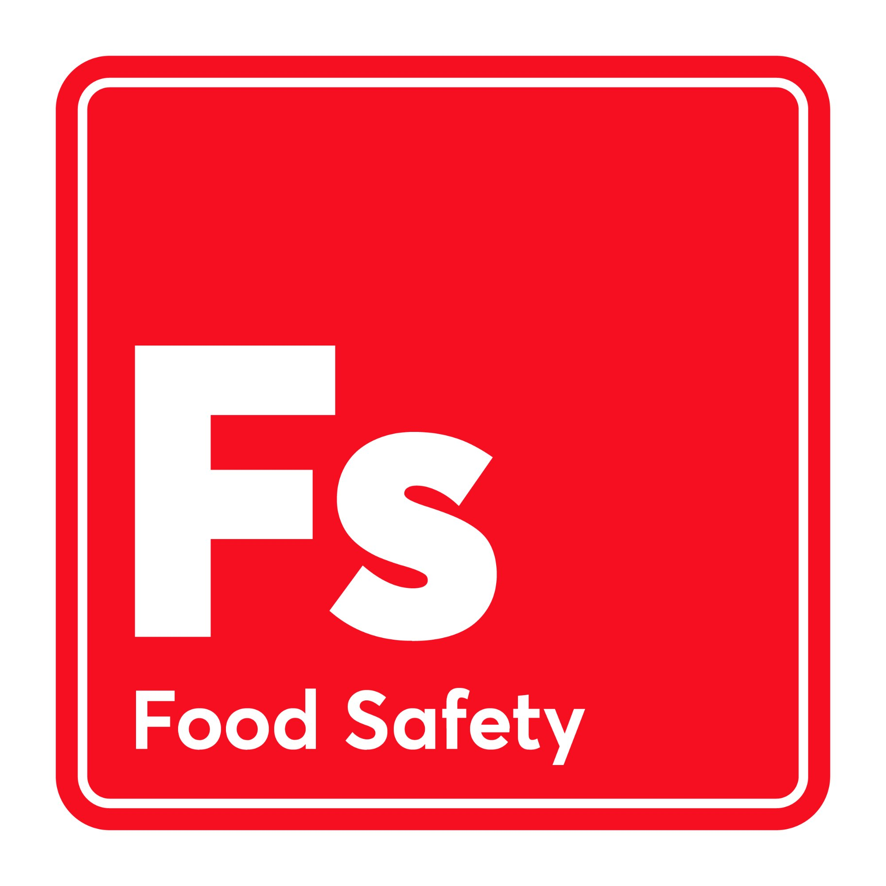

Part of MG Training Ltd — specialist compliance training delivered by an industry expert with over 20 years of teaching experience.
Notts & Derby First Aid is a trading name of MG Training Ltd, founded in 2005, specialising in compliance training from a base in Nottingham.
Our director has a background in hospitality operations but has been lecturing in further education since 2005, training a large number of learners across multiple compliance disciplines.
That depth of experience means our training goes far beyond ticking boxes — it's practical, relevant, and delivered by someone who understands the workplaces and industries they train.
Based at NBV Enterprise Centre, Davids Lane, Old Basford, Nottingham. Specialist compliance training across multiple disciplines — delivered in-house and throughout the East Midlands.
Notts & Derby First Aid is our dedicated first aid brand, covering Nottinghamshire and Derbyshire with on-site workplace and paediatric first aid training.
In addition to first aid, MG Training delivers accredited and regulated qualifications across the following compliance disciplines.
Part of MG Training Ltd — specialist compliance training delivered by an industry expert with over 20 years of teaching experience.
p>Notts & Derby First Aid is a trading name of MG Training Ltd, founded in 2005, specialising in compliance training from a base in Nottingham.
p>Our director has a background in hospitality operations but has been lecturing in further education since 2005, training a large number of learners across multiple compliance disciplines.
p>That depth of experience means our training goes far beyond ticking boxes — it's practical, relevant, and delivered by someone who understands the workplaces and industries they train.
p>Based at NBV Enterprise Centre, Davids Lane, Old Basford, Nottingham. Specialist compliance training across multiple disciplines — delivered in-house and throughout the East Midlands.
Notts & Derby First Aid is our dedicated first aid brand, covering Nottinghamshire and Derbyshire with on-site workplace and paediatric first aid training.
In addition to first aid, MG Training delivers accredited and regulated qualifications across the following compliance disciplines.
Level 2 Award for Personal Licence Holders (APLH) and licensing law training under the Licensing Act 2003.

Level 2, Level 3 and Level 4 Food Safety & Hygiene qualifications for food handlers, supervisors, managers and senior food safety professionals in catering, hospitality and retail environments.
Hazard Analysis and Critical Control Points training for food manufacturers and catering operations — a legal requirement for food businesses and a cornerstone of effective food safety management systems.
Practical workplace health and safety training including risk assessment, legal responsibilities and compliance for businesses across all sectors.
Teaching, training and assessment qualifications for trainers, assessors and Internal Quality Assurers (IQAs) working in further education and workplace learning.
For all other compliance training enquiries, visit mgtraining.co.uka>
On-site delivery throughout Nottinghamshire and Derbyshire.
Level 2 Award for Personal Licence Holders (APLH) and licensing law training under the Licensing Act 2003.
Level 2, Level 3 and Level 4 Food Safety & Hygiene qualifications for food handlers, supervisors, managers and senior food safety professionals in catering, hospitality and retail environments.
Hazard Analysis and Critical Control Points training for food manufacturers and catering operations — a legal requirement for food businesses and a cornerstone of effective food safety management systems.
Practical workplace health and safety training including risk assessment, legal responsibilities and compliance for businesses across all sectors.
Teaching, training and assessment qualifications for trainers, assessors and Internal Quality Assurers (IQAs) working in further education and workplace learning.
For all other compliance training enquiries, visit mgtraining.co.uk
On-site delivery throughout Nottinghamshire and Derbyshire.